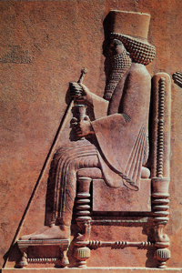

Lezione 2  Le antiche civiltà del Mediterraneo
Le antiche civiltà del Mediterraneo

-
230
750
-
230
780
-
160
680
-
60
360

PERSEPOLIS
Il re persiano Dario seduto su un trono dalla raffinata e complessa struttura architettonica: questo rilievo, proveniente dal palazzo di Persepolis sembra rispecchiare proprio l’intensa e feconda attività di riforme amministrative che caratterizzò il suo regno.PERSEPOLIS
L'Impero di Ciro, al contrario di quello assiro, attua il principio della tolleranza verso i popoli conquistati. È famoso il caso di Babilonia, che Ciro conquista autoproclamandosi figlio del dio babilonese Marduk, sapendo che il sovrano avversario aveva appena tentato di sostituire il suo culto con quello di un altro dio.SUSA
Dario I dà un'organizzazione inedita al potere imperiale: per evitare ribellioni e rafforzare il potere centrale, istituisce le satrapie, province governate da satrapi seguiti da vicino da funzionari statali, che fanno rapporto direttamente a Dario. Crea inoltre il Darico, una moneta unica per tutto l'Impero, e lascia alle satrapìe la libertà di culto.SARDI
Nel 547 a.C. Ciro conquista la Lidia sconfiggendo Creso, il re leggendario per la sua ricchezza. Questo evento è documentato dallo storico greco Erodoto. Per gli antichi greci questo è il primo contatto con la civiltà persiana, il primo di una lunga serie, fino ai tentativi di conquista di Dario e del figlio Serse, avvenuti circa un secolo dopo.